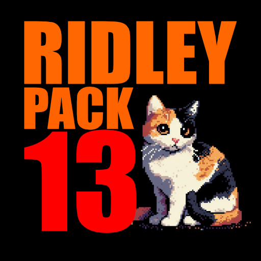

RidleyPack Minecraft Modpack

Click to download modpack profile (RidleyPack 13.1 - February 14, 2024)
System Requirements
This modpack has a lot of mods in it, and it may not work on your computer.
- You should have at least 8gb of RAM.
- Once installed, this pack uses about 800 MB of storage space.
- This modpack is for the Java edition of Minecraft, and will not work on the Bedrock version, or any other version.
- This modpack was tested on Windows 11, and may not work on other platforms (but it should).
How to Import this modpack
⚠️ The current "old" version of GDLauncher is no longer receiving updates, in anticipation of the new version, GDLauncher Carbon. GDLauncher Carbon is not yet ready, though, so it's more challenging to download and install.
Choose which version of GDLauncher you'd like to use and follow the appropriate list of instructions below (don't follow both sections of instructions).
Option 1: GDLauncher Carbon (beta)
- Download the modpack zip file from the link at the top of this page.
- Join the GDLauncher Discord so you can access the installer for the current version of GDLauncher Carbon Alpha (found in the "Beta Releases" channel)
- Download the most current version of GDLauncher Carbon
- If you get a blue error message about how Windows "Protected your PC", click More Info and then click the Run anyway button that appears.
- It does not matter if you install it for "all users" or just your user
- Run GDLauncher Carbon and log into your Microsoft account, grant it access to view your profile
- Let it handle Java for you if it prompts, just to make things easier. Otherwise you will need Java 17 from somewhere (Personally I recommend Amazon Corretto 17
- Click Add Instance along the top-right(ish)
- Click Import on the top of the dialog box that pops up
- Click Curseforge Zip
- Give it the zip file that you downloaded above
- At the time of this writing, this dialog box is very buggy. You probably want to click the little "i" icon if you are confused here.
- Click the checkbox next to RidleyPack 13
- Click Begin Import
- Let it install the modpack, download and patch forge, download mods, etc. This may take several minutes.
- Click into the modpack once it's finished
- Click settings
- Click the sliding toggle button next to Instance Java Memory
- Set this slider to around 8 GB. If you have more RAM, don't set this higher than 8.
- You may be able to make this work with less than 8, if your RAM is limited. You will need to set this higher than 4gb though.
- You should now be able to start the game and join the server.
Option 2: GDLauncher
- Install GDLauncher - https://gdevs.io/
- Download the modpack zip file from the link at the top of this page.
- In GDLauncher, click the plus sign in the bottom-left corner
- Give it the zip file that you downloaded in step 2
- Wait for it to download the mods
- Check to see if you should adjust your RAM (see steps below)
- The modpack should show up in the GDLauncher menu. Click it to launch it.
- It may take 10-15 minutes to fully load, depending on your computer
- It may appear to freeze or hang. Just leave it be and it should eventually come out of it. This is normal.
- When joining the server, ignore the red "X" telling you the server is incompatible - it's lying to you
Adjusting your Java RAM (if your game crashes during loading or freezes periodically)
If you experience crashes while loading, or regular freezes at time intervals (like every few seconds for example), you may need to adjust the amount of RAM that Minecraft can use.
- Open GDLauncher.
- Click the "Gear" icon in the top-right corner of GDLauncher.
- On the left, click Java.
- Find the section labelled Java Memory.
- Use the slider to adjust the amount of RAM Java is allowed to use.
- There is no "right" ammount, because this depends on how much RAM your system has.
- I recommend setting it around 8000, if your system has this much RAM.
- If you have more than 8GB of RAM, you don't need to set this all the way to the right. Around 8000 is probably more than enough.
- Changes are automatically saved, so click the "X" in the top-right to exit settings (the lower "X", not the one for the whole program.)
Can I play this single-player?
Probably, but I wouldn't recommend it unless you have a powerful gaming computer. This pack is not designed to be played in single player, but it should work - you may need to tinker with it a bit to make it work.
What's the server address?
Its a private server, so I don't give that out here. Ask someone who already knows for the connection info.
Who is Ridley?
Ridley was a cat, who unfortunatelly passed on in November 2020. This pack needed a name, and it is now named after Ridley.